Задачи для контроля знаний Правил дорожного движения и техники управления автомобилем.
1. Как вы поступите, если при движении в темное время суток на дороге с искусственным освещением у вашего автомобиля перестали гореть фары:
а) попытаетесь устранить неполадки, а если это не удастся, то, соблюдая все меры предосторожности, проследуете далее; б) продолжите поездку; в) прекратите движение.
(Ответ: а)
2. Может ли автомобиль с прицепом буксировать другой неисправный автомобиль:
а) нет; б) может; в) только при жесткой сцепке.
(Ответ: а)
3. В какой последовательности транспортные средства должны проехать перекресток?
а) легковой автомобиль; б) трамвай; в) мотоцикл.
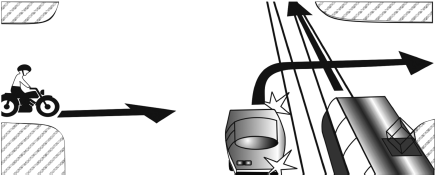
(Ответ: б; а; в)
4. Кто имеет преимущество?
а) водитель автобуса; б) водитель легкового автомобиля.
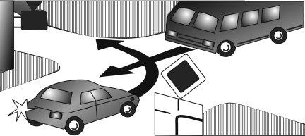
(Ответ: б)
5. При движении в темное время суток вас ослепил встречный автомобиль. Как вы поступите в данном случае:
а) продолжите движение; б) съедете на обочину и остановитесь; в) снизите скорость и продолжите движение; г) не меняя полосы движения и включив аварийный сигнал, остановитесь.
(Ответ: г)
6. Скорость движения в тумане не должна превышать:
а) 20–30 км/ч; б) 50–60 км/ч; в) скорость не ограничена; г) 40–60 км/ч.
(Ответ: а)
7. Следуя на легковом автомобиле, вы догоняете на перекрестке грузовик, который остановился на перекрестке и собирается делать правый поворот. Вам также нужно сделать этот же маневр. Знака, разрешающего поворот со второго ряда, нет. Правая полоса основательно занята. Что вы предпримете:
а) повернете вслед за грузовой машиной со второго ряда; б) дождетесь, пока освободиться правый ряд и, перестроившись, повернете; в) доедете до следующего перекрестка и там повернете.
(Ответ: б)
8. В какой последовательности транспортные средства должны проехать перекресток?
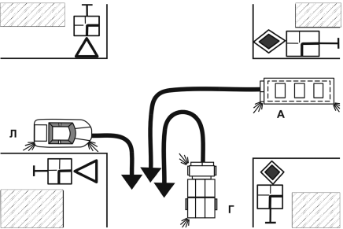
а) грузовой автомобиль; б) легковой автомобиль;
в) автобус.
(Ответ: в; а; б)
9. В какой последовательности транспортные средства должны проехать перекресток?
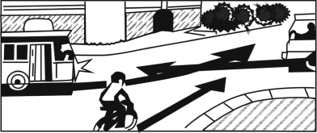
а) троллейбус (Т); б) автобус (А); в) велосипед.
(Ответ: б; в; а)
10. Вы следуете за грузовиком, который едет со скоростью 30–40 км/ч. Дорога двухполосная со встречным движением. Обзорность ограничена. Впереди нерегулируемый перекресток. Каковы ваши действия:
а) обгоните грузовик до перекрестка; б) убедитесь в том, что нет встречного транспорта, совершите обгон на перекрестке; в) не совершая никаких маневров, проследуете за грузовиком до перекрестка и переедете его.
(Ответ: в)
11. Вы стоите на перекрестке за грузовым автомобилем. Вдруг он начал двигаться задним ходом. Вы:
а) выскочите из автомобиля и с криками побежите к водителю грузовой машины; б) включите заднюю передачу и начнете подавать звуковой сигнал; в) сами начнете двигаться задним ходом.
(Ответ: б)
12. Разрешен ли обгон в ситуации, показанной на рисунке?
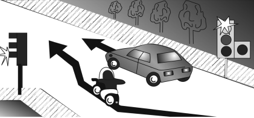
а) да, в светлое время суток; б) да, если скорость обгоняемого автомобиля менее 30 км/ч; в) нет.
(Ответ: в)
13. В каких направлениях, из числа обозначенных стрелками, запрещено движение легковому автомобилю?
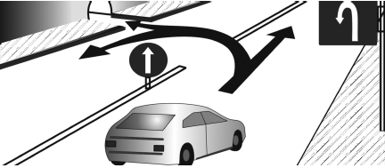
а) прямо; б) налево; в) на разворот.
(Ответ: б, в)
14. Вы следуете за автопоездом по мокрому после дождя шоссе. Из-под колес автопоезда вытекают грязевые брызги. Движение двухстороннее, полоса, по которой вы едете – не более 4 м шириной. Вы хотите обогнать автомобиль, который движется со скоростью не более 60 км/ч и в метре от правого края проезжей части. Какую тактику изберете:
а) включите левый поворот и, убедившись, что встречная полоса свободна, начнете обгон, предварительно подав звуковой сигнал; б) включите левый поворот, стеклоочистители и, подав звуковой сигнал, начнете маневр; в) убедившись, что встречная полоса свободна, включите левый поворот, стеклоочистители, несколько раз подадите звуковой и световой сигналы и, убедившись, что водитель автопоезда заметил и понял ваши намерения, начнете обгон.
(Ответ: в)
15. Двигаясь по узкой проселочной дороге, вы заметили впереди большую лужу, занимающую почти всю проезжую часть. Навстречу вам движется другой автомобиль. Вы:
а) снизите скорость, чтобы избежать разъезда с другой машиной у лужи, и включите на всякий случай стеклоочистители; б) проследуете далее с прежней скоростью; в) увеличите скорость и попытаетесь проскочить лужу первым; г) резко затормозите и остановитесь, пропуская встречную машину.
(Ответ: а)
16. Кто обязан уступить дорогу?
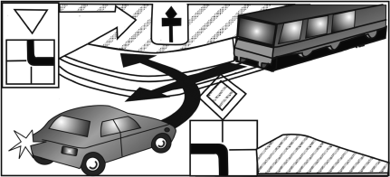
а) водитель трамвая; б) водитель легкового автомобиля.
(Ответ: а)
17. Нарушит ли (если да, то при каких условиях) Правила дорожного движения водитель легкового автомобиля, совершив обгон в показанной ситуации?
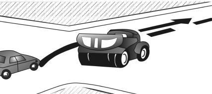
а) нарушит, если скорость движения грузовика 40 км/ч; б) нарушит в темное время суток; в) нарушит в светлое время суток; г) не нарушит.
(Ответ: а; б; в)
18. Двигаясь в тумане по загородной дороге, вы решили обогнать автомобиль, который едет со скоростью значительно ниже скорости вашего автомобиля. Начав обгон, заметили свет фар встречной машины, расстояние до которой не позволяет совершить маневр без лишних проблем. Что вы сделаете в подобной ситуации:
а) увеличите скорость и доведете начатое до конца;
б) откажетесь от обгона и вернетесь на свою полосу движения; в) продолжите обгон с прежней скоростью, но при этом будете подавать звуковой и световой сигналы встречной машине с просьбой уступить дорогу.
(Ответ: б)
19. Двигаясь по загородному шоссе, вы подъезжаете к автобусной остановке со скоростью не более 60 км/ч и замечаете, что стоявший на ней автобус начал движение. Дорога шириной около 7 м. Что вы предпримете:
а) снизите скорость и позволите автобусу первым отъехать от остановки и проследовать дальше; б) увеличите скорость движения и «проскочите» перед автобусом; в) посигналите автобусу и первым проедете этот участок дороги.
(Ответ: а)
20. Разрешено ли водителям транспортных средств двигаться через перекресток одновременно?
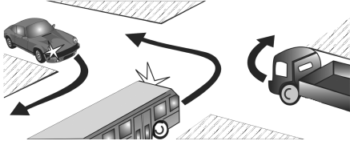
а) запрещено; б) разрешено водителям всех транспортных средств; в) разрешено только водителям грузового и легкового автомобилей, а водитель автобуса должен проехать последним.
(Ответ: б)
21. В какой последовательности транспортные средства должны проехать перекресток?
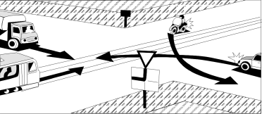
а) трамвай; б) мотоцикл; в) грузовой автомобиль;
г) легковой автомобиль.
(Ответ: в; б; а; г)
22. Вы двигаетесь по дороге за городом шириной не более 7 м со скоростью 60 км/ч вслед за другим легковым автомобилем, собирающимся обогнать автобус, который едет со скоростью 40–50 км/ч. Обзорность встречной полосы для вас ограничена. Вы:
а) совершите обгон вслед за первой машиной; б) повремените с обгоном и совершите маневр только после того, как оцените обстановку и убедитесь в отсутствии препятствия; в) сбросите скорость и увеличите расстояние между своей и предыдущей машиной.
(Ответ: б)
23. Передние и задние сидения легкового автомобиля оборудованы ремнями безопасности. Кто должен ими пристегиваться во время движения:
а) водитель; б) пассажир заднего сиденья; в) если движение происходит в условиях загородной дороги, то можно вообще не пристегиваться; г) пассажир переднего сиденья; д) все участники движения.
(Ответ: д)
24. В какой последовательности транспортные средства должны проехать перекресток?
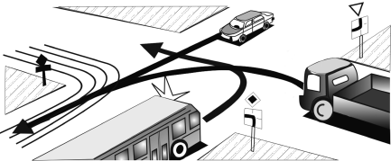
а) грузовой автомобиль; б) автобус; в) легковой автомобиль.
(Ответ: б; в; а)
25. В каких направлениях, из числа обозначенных стрелками, разрешено движение водителю легкового автомобиля?
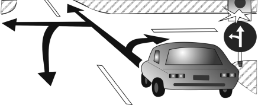
а) прямо; б) направо; в) налево; г) на разворот.
(Ответ: а; в; г)
26. Если вы вынуждены остановиться в месте, где остановка запрещена, как вы поступите:
а) включите аварийную сигнализацию; б) включите фары; в) выставите знак аварийной остановки.
(Ответ: а; в)
27. Каков тормозной путь легкового автомобиля на сухом асфальтированном покрытии при скорости 60 км/ч:
а) 15 м; б) 25 м; в) 30 м; г) 10 м.
(Ответ: б)
28. Надо ли высаживать пассажиров из легкового автомобиля при его буксировке:
а) да; б) нет.
(Ответ: б)
29. Кто первым должен пересечь нерегулируемый перекресток:
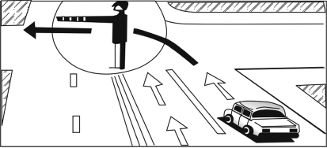
а) тот, кто быстрее успеет; б) тот, кто пользуется преимуществом главной дороги; в) тот, кто первым подъехал к перекрестку.
(Ответ: б)
30. Можно ли в такой ситуации повернуть налево?
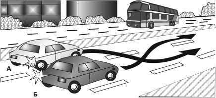
а) можно; б) нельзя.
(Ответ: б)
31. Кто из водителей обязан уступить дорогу?
а) водитель легкового автомобиля А; б) водитель легкового автомобиля Б (Ответ: а)
32. Вы едете со скоростью 80 км/ч и хотите обогнать машину, движущуюся со скоростью 60 км/ч. Какой приблизительно путь вам потребуется, чтобы совершить этот маневр:
а) 350 м; б) 200 м; в) 400 м.
(Ответ: а)
33. При какой неисправности, замеченной в самом начале движения, вы вернетесь домой:
а) не горят противотуманные фары; б) не работает звуковой сигнал; в) вышел из строя амортизатор; г) не горят все фары.
(Ответ: г)
34. Какие из перечисленных ниже ответов соответствуют термину «вынужденная остановка»?
а) прекращение движения из-за технической неисправности транспортного средства; б) преднамеренное прекращение движения для высадки пассажиров; в) прекращение движения из-за опасности, созданной состоянием водителя; г) преднамеренное прекращение движения транспортного средства на время до 5 мин; д) прекращение движения из-за опасности, созданной перевозимым грузом; е) прекращение движения для погрузки транспортного средства.
(Ответ: а; в; д)
35. В каких случаях водителям разрешено перемещать транспортное средство после дорожно-транспортного происшествия?
а) запрещено в любом случае; б) когда нет пострадавших; в) при взаимном согласии водителей, когда нет пострадавших и материальный ущерб является несущественным;
г) когда движение других транспортных средств невозможно.
(Ответ: в; г)
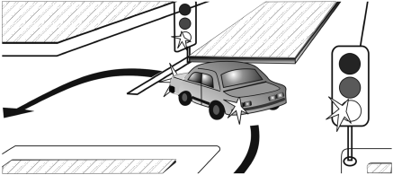
36. Как должен поступить водитель легкового автомобиля в ситуации, показанной на рисунке?
а) остановиться; б) закончить разворот.
(Ответ: а)
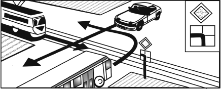
37. В какой последовательности транспортные средства должны проехать перекресток?
а) автобус; б) трамвай; в) легковой автомобиль.
(Ответ: б; а; в)
38. Должен ли уступать водитель дорогу пешеходам и велосипедистам, путь движения которых он пересекает при съезде с дороги?
а) должен уступить пешеходам; б) должен уступить велосипедистам; в) пешеходы и велосипедисты должны пропустить водителя.
(Ответ: а; б)
39. Вы подъезжаете к нерегулируемому перекрестку с пешеходным переходом, переходить который собираются люди. Каковы ваши действия:
а) увеличите скорость и, убедившись, что перекресток не переезжают другие машины, быстро проскочите переход; б) пропустите пешеходов; в) подадите звуковой сигнал и проследуете дальше, предполагая, что пешеходы вас пропустят.
(Ответ: б)
40. Двигаясь со скоростью 70 км/ч по заснеженной дороге, вы за 20–25 м увидели небольшой обледенелый участок дороги. Вы:
а) выключите передачу и пустите автомобиль «накатом»; б) не меняя положения рулевого колеса и педали газа, проедете опасный участок; в) притормозите перед самым ледяным участком.
(Ответ: б)
41. Проезжая по городу, вы решили остановиться и выйти из автомобиля. Вы:
а) через зеркало заднего вида и боковые зеркала убедитесь в том, что опасности нет, и выйдите из автомобиля; б) быстро откроете дверцу и выйдете; в) откроете дверь и, оценив обстановку на дороге, покинете автомобиль.
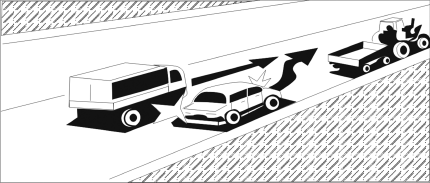
(Ответ: а)
42. Кто имеет преимущественное право на движение?
а) водитель легкового автомобиля; б) водитель грузового автомобиля.
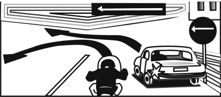
(Ответ: б)
43. Нарушили или не нарушили требования Правил дорожного движения водители, двигаясь по направлениям, обозначенным стрелками?
а) мотоциклист нарушил; б) мотоциклист не нарушил; в) водитель легкового автомобиля нарушил; г) водитель легкового автомобиля не нарушил.
(Ответ: б; в)
44. Какова правильная последовательность действий водителя, совершившего наезд на пешехода?
а) немедленно остановиться; б) сообщить о случившемся в милицию и ожидать прибытия работников милиции; в) оказать доврачебную медицинскую помощь пострадавшему и вызвать «Скорую помощь»; г) включить аварийную сигнализацию.
(Ответ: а; г; в; б)
45. Как правильно остановить артериальное кровотечение на конечности в первые минуты после травмы:
а) прижать артерию к кости ниже места ранения;
б) прижать артерию к кости выше места ранения; в) надавить на рану всей ладонью.
(Ответ: б)
46. У вашего пострадавшего черепно-мозговая травма, и он потерял сознание. Как вы расположите его на сидении автомобиля:
а) сидя; б) лежа на боку; в) лежа на спине.
(Ответ: б)
47. У пострадавшего сломана нога, ему необходимо наложить транспортную шину. Вы:
а) захватите сустав выше и ниже места перелома; б) на месте перелома; в) с захватом сустава выше перелома.
(Ответ: а)
48. Чем вы промоете рану:
а) 3 %-ной перекисью водорода; б) водой; в) раствором марганцовки; г) спиртом.
(Ответ: а; в)
49. Как перевозить пострадавшего, получившего травму головы, но не потерявшего сознание:
а) лежа; б) сидя.
(Ответ: а)
50. Влияет ли посадка водителя за рулем автомобиля на его работоспособность и безопасность движения:
а) нет; б) да, влияет, причем при любых условиях;
в) влияет только при поездках на большие расстояния.
(Ответ: б)
51. При движении в темное время суток вы почувствовали, что засыпаете за рулем. Ваши действия:
а) остановитесь на обочине и подремлете; б) включите погромче музыку в приемнике и поедете дальше; в) приоткроете окна в салоне, тем самым увеличите доступ свежего воздуха и обеспечите понижение температуры в салоне.
(Ответ: в)
52. Ваши глаза устали от длительного движения в тумане. Вы:
а) не меняя полосы движения, затормозите и остановитесь. Движение продолжите только после того, как глаза отдохнут; б) съедете с дороги, остановитесь, выключите габаритные огни и отдохнете; в) съедете с дороги, остановитесь, не выключая габаритных огней, и, отдохнув, продолжите движение.
(Ответ: в)
53. На покрытой льдом дороге ваш автомобиль стало заносить. Вы:
а) снизите скорость и продолжите движение; б) резко затормозите; в) не изменяя частоты вращения коленвала двигателя, быстро повернете руль в сторону заноса.
(Ответ: в)
54. Во время поездки вы почувствовали недомогание. Ваши действия:
а) не обращая внимания на боль, продолжите движение; б) примите таблетку и отправитесь в ближайший медпункт.
(Ответ: б)
55. Двигаясь на своем автомобиле со скоростью 50 км/ч во втором ряду по дороге шириной 12 м, вы неожиданно увидели, что из-за машины, движущейся в первом ряду, выбежал пешеход. Расстояние от вашего автомобиля до пешехода не более 30 м. Дорога со встречным движением и по встречной полосе движется сплошной поток транспортных средств. Вы:
а) резко перестроитесь в первый ряд и продолжите движение; б) затормозите, не меняя полосы движения; в) не меняя скорости движения, начнете подавать звуковой сигнал.
(Ответ: б)
56. Вы проезжаете железнодорожный переезд без шлагбаума, и прямо на середине у вас глохнет автомобиль. Пассажиров в машине нет. Ваши действия:
а) бросите автомобиль и пойдете искать помощь;
б) останетесь в автомобиле и будете подавать звуковые сигналы, прося о помощи, а увидев поезд, отойдете от автомобиля на безопасное расстояние; в) примете все меры, чтобы удалить автомобиль с путей. Если это сделать не удастся, то останетесь возле автомобиля и начнете подавать сигналы общей тревоги. Как только на горизонте покажется поезд, побежите ему на встречу, размахивая руками, с просьбой остановиться.
(Ответ: в)
57. По второстепенной дороге вы подъезжаете к перекрестку и хотите повернуть направо. Слева по шоссе движется другой автомобиль, расстояние от него до перекрестка 100–150 м. Вы:
а) остановитесь и пропустите машину; б) быстро повернете и продолжите движение; в) повернете и, съехав на обочину, пропустите другой автомобиль.
(Ответ: а) правовая информация УТВЕРЖДЕНЫ постановлением Правительства Российской Федерации 8.07.1997 № 831